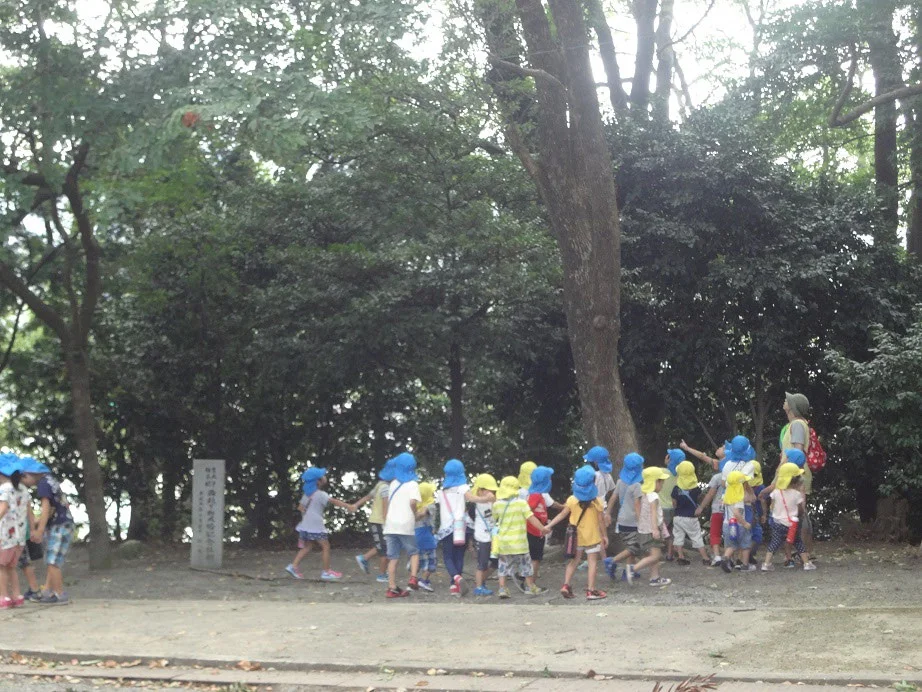

ABOUT
大切なお子さまを、
地域とともに70年。
長い歴史の中で、お子さまをお預かりする責任と向き合いながら、新しい保育のかたちと保育の質を追い求めてきました。
駅の近くにありながら自然に恵まれた環境で、毎日のお散歩や自然観察を通して、からだと豊かな心を育てます。

AT A GLANCE
ひと目でわかる、
篠栗保育園。
対象年齢生後6か月〜
就学前0〜5歳児クラス
就学前0〜5歳児クラス
保育時間7:00〜18:00延長保育 〜19:00
土曜保育あり休園日：日曜・祝日・年末年始
定員90名給食は月〜土
FOR PARENTS
保護者のみなさまに、
うれしい5つのこと。
01
オムツは園で処分
使用済みオムツの持ち帰りはありません。衛生面と毎日の負担を軽く。
02
連絡はスマホで
欠席・遅刻連絡、連絡帳、登降園管理、毎日の給食写真までアプリで。
03
見守りカメラ
乳幼児の保育室・園庭・駐車場に設置。安心してお預けいただけます。
04
一緒にお誕生会
毎月の誕生会では、おうちの方も給食を一緒に食べてお祝いします。
05
写真で成長を
「えんフォト」で園での写真をオンライン閲覧・購入できます。
GALLERY
園のようす
季節の行事や、毎日のなにげない時間。
子どもたちの表情をご覧ください。
RECRUIT
子どもの「できた！」を、
いっしょに見守りませんか。
家庭的であたたかい雰囲気の中、一人ひとりに丁寧に向き合える園です。ICT導入で、書類仕事の負担も軽くしています。
- 創立70年以上の安定した法人
- 原則残業なし・住居手当あり
- 篠栗駅から徒歩圏内・駐車場無料